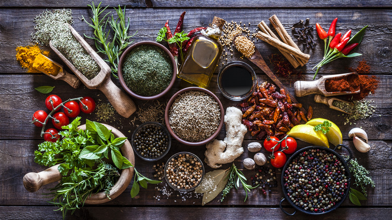

About Us
At Flavor Fusion, we believe that every meal should be a delightful
journey of taste exploration. Our passion for food and technology has inspired us
to create a cutting-edge recipe recommendation system designed to revolutionize
the way you cook and experience flavors.
Our team of culinary experts and data scientists have meticulously crafted an innovative
platform that harnesses the power of artificial intelligence to provide you with personalized
recipe suggestions tailored to your unique preferences, dietary needs, and culinary aspirations.